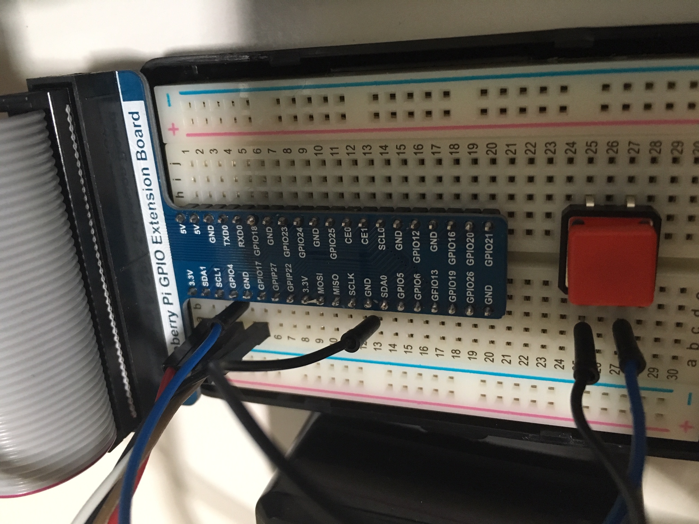

Getting Started with Mixed Reality Models
Learn more about the development of mixed reality 3D models of dinosaur fossils. Create smart models in tangible and virtual forms infused with artificial intelligence capabilities.

Virtual Reality
Learn about the Virtual Reality workflow to create 3D models in Unity and the Windows Mixed Reality platform.
Tangible Reality
Learn about the Tangible Reality workflow to create 3D models with embedded sensors and printable physical objects.
Acknowledgements
Support for this work has been provided by the College of Education at the University of Utah, the Windows Mixed Reality Funding Program, and the Natural History Museum of Utah.
Setting Up a Project
1. Installation Checklist | Documentation
The software required to build virtual reality apps are listed below:
- Windows 10 Operating System
- Enable developer mode on your PC at Settings > Update & Security > For developers.
- If your PC is managed by an your organization's IT department, you may need to contact them in order to update.
- Windows Mixed Reality immersive (VR) headsets are not supported on 'N' versions of Windows.
- Visual Studio 2017
- Do not install the Unity workload; this step will be completed later. You should install the latest Visual Studio 2017/2019 application, UWP development package (C++ UWP tools, Win 10 SDK 10.0.17134.0) and C++ Windows SDK (10.0.17763.0)
- Windows 10 SDK
- Made available as part of the VS2017 installation.
- Unity Game Engine 2018.3
- The Unity LTS (Long Term Support) stream as the best version with which to start new projects.
- Windows Mixed Reality Toolkit
- Packages imported in Unity to facilitate the development process.
2. Setting Up the Hardware | Documentation
Ensure that your PC meets the minimal hardware requirements to ensure proper performance - including graphics card, ports, bluetooth, and CPU/storage. For the complete list of supported devices, visit the Windows Mixed Reality Devices. To learn whether your own device meets the requirements, download the Windows Mixed Reality App Check from the Windows Store.
This documentation only applies to Windows Mixed Reality headsets. Additional requirements for developing for HoloLens 1 or 2 are not listed here.
3. Getting Started with Unity | Documentation
3.1. Start a New Project
- Start Unity
- Select New
- Enter a project name (e.g. "MixedRealityIntroduction")
- Enter a location to save your project
- Ensure the 3D toggle is selected
- Select Create project
3.2. Importing the Windows Mixed Reality Packages
- Go to the MRTK release page.
- Under Assets, download both Microsoft.MixedRealityToolkit.Unity.Examples.unitypackage and Microsoft.MixedRealityToolkit.Unity.Foundation.unitypackage
- Import the Microsoft.MixedRealityToolkit.Unity.Foundation.unitypackage you downloaded by going into "Asset -> Import Package -> Custom Package", selecting the .unitypackage file, ensure all items to import are checked, and then selecting "Import".
- Import Microsoft.MixedRealityToolkit.Unity.Examples.unitypackage following the same steps as above. The examples package is optional but contains useful demonstration scenes for current MRTK features.
- Some prefabs and assets require TextMesh Pro, meaning you have to have the TextMesh Pro package installed and the assets in your project (Window -> TextMeshPro -> Import TMP Essential Resources). After you import TMP Essentials Resources, you need to restart Unity to see changes.
Importing the Windows Mixed Reality Toolkit
1. Download the Latest Release | Documentation
Get the latest release of the Windows Mixed Reality Toolkit and read about any recent updates.
- Go to the MRTK release page.
- Under Assets, download both Microsoft.MixedRealityToolkit.Unity.Examples.unitypackage and Microsoft.MixedRealityToolkit.Unity.Foundation.unitypackage
2. Importing the Toolkit as a Package in Unity | Documentation
- Import the Microsoft.MixedRealityToolkit.Unity.Foundation.unitypackage you downloaded by going into "Asset -> Import Package -> Custom Package", selecting the .unitypackage file, ensure all items to import are checked, and then selecting "Import".
- Import Microsoft.MixedRealityToolkit.Unity.Examples.unitypackage following the same steps as above. The examples package is optional but contains useful demonstration scenes for current MRTK features.
- Some prefabs and assets require TextMesh Pro, meaning you have to have the TextMesh Pro package installed and the assets in your project (Window -> TextMeshPro -> Import TMP Essential Resources). After you import TMP Essentials Resources, you need to restart Unity to see changes.
3. Add the Toolkit to a New Scene in Unity | Documentation
- Create a new project or start a new scene in your current project.
- From the menu bar, select Mixed Reality Toolkit -> Add to Scene and Configure.
- You will then be prompted to choose an MRTK Configuration profile. Double click "DefaultMixedRealityToolkitConfigurationProfile".
- You will then see the following in your Scene hierarchy:
- Mixed Reality Toolkit - The toolkit itself, providing the central configuration entry point for the entire framework.
- MixedRealityPlayspace - The parent object for the headset, which ensures the headset / controllers and other required systems are managed correctly in the scene.
- The Main Camera is moved as a child to the Playspace - Which allows the playspace to manage the camera in conjunction with the SDK's. Note While working in your scene, DO NOT move the Main Camera (or the playspace) from the scene origin (0,0,0). This is controlled by the MRTK and the active SDK. If you need to move the players start point, then move the scene content and NOT the camera!
- Select the Mixed Reality Toolkit in the Hierarchy panel.
- In the Inspector panel, choose Experience Settings. In the Target Scale dropdown menu, select the Seated option.
- Scroll down the Inspector panel and deselect both the Enable Diagnostic System and Teleport functionalities.
- Hit play and test out hand simulation by pressing spacebar.
4. Setting Up Your Project for a Build | Documentation
- Choose Edit > Project Settings. In Player Settings, select the Windows icon. Choose XR Settings and select Virtual Reality Supported.
- Choose Other Settings and select IL2CPP from the Scripting Backend dropdown menu.
- Once your project is ready to be published, choose File > Build Settings. Select Add Open Scenes. Choose Universal Windows Platform as the targeted platform.
- For Target Device, choose Any Device.
- For Architecture, choose X64.
- For Build Type, choose D3D.
- For Target SDK Version, choose Latest Installed.
- For Minimum Platform Version, choose 10.0.10240.0
- For Visual Studio Version, choose VS 2017.
- Choose Debug on your own local machine. Select Build. Create a new folder and call it "App". Once the Build has been succesfully completed, open the .sln project file in Visual Studio to build a release or debug version. For instance, choose the Debug option, X64 as the architecture, and on device. Now choose Debug > Play without Debugging. Make sure that your device is connected to the USB and the Mixed Reality Portal is open and running.
- For research purposes, always run the project in the Game preview mode in the Unity editor. Split the views of the user interface to show both the Game and Console panels. Tell the participant to adjust the headset and keep the headset screen facing upwards in order to view the PC screen. Press the Play button followed by the 'O' key to log a session start event. The participant can now move the headseet screen downwards in front of their own eyes to begin a session. During the session, press the Windows and Y keys to view the Game preview on the screen for video-recording purposes. At the end of a session, press the 'P' key to log a session end event. Instruct the participant to move the headset screen upwards to view the PC screen.
Adding the 3D Model
1. Import the 3D Model | Documentation
Export the 3D model as a .obj file. Otherwise, Unity also supports several different file extension types.
- You can import the 3D model by dragging and dropping the .obj file inside the Assets folder
- From the project monitor, select the .obj file to view its settings.
- Drag and drop the .obj file in the scene area (under Hierarchy). The .obj file is assigned a name (e.g., UMNH VP 24854 Allosaurus ungual) and has an embedded asset (e.g., Group1). Scale the model name (e.g., X: 0.02; Y: 0.02; Z: 0.02) and adjust the position for it to appear in front of the camera (e.g., X: 0; Y: 0; Z: 2).
- Scale the model name (e.g., X: 0.25; Y: 0.25; Z: 0.25) and adjust the position for it to appear in front of the camera (e.g., X: 0; Y: 0; Z: 0) and rotation (e.g., X: 45; Y: 45; Z: 45).
2. Import the Texture | Documentation
Export the texture as a .png file.
- In the Assets folder, create a new folder called "Textures".
- You can import the texture by dragging and dropping the .png file inside the Assets > Textures folder.
- Drag and drop the .png file on to the embedded asset of the 3D model (e.g., Group1). You should see the appearance of the model change in the scene area.
- In the Textures folder, select the .png file.
- In the Texture Type dropdown menu, select the Lightmap option.
- Choose ToSmaller option in the Advanced dropdown menu. Select the Windows icon at the bottom, choose Override for Universal Windows Platform.
3. Customize the Scene Boundaries | Documentation
Customize the settings of the WMRT to change the background color of the scene boundaries.
- Select the MixedRealityToolkit in the Hierarchy panel.
- Enable the customization option to the default configuration of the WMRT project settings.
- In Camera Settings, select Clone for the Camera Profile. Select the dropdown option to view the Camera Profile Contents.
- Set the Background Color to Black.
- Select Directional Light in the Hierarchy panel.
- In the Inspector panel, select Directional in the Light dropdown menu options.
- Increase the Bias property until the object is clearly visible (i.e., Bias 0.8).
Adding a Bounding Box
1. Adding the Bounding Box Component to the 3D Model | Documentation
Add components to the 3D model to create a bounding box to enable user interactions.
- Select the embedded asset of the 3D model (e.g., Group1).
- Select the Add Components button at the bottom of the Inspector panel.
- Type Box Collider in the dropdow and add the component to the 3D model. The default settings for the Box Collider should work well.
- Now let's add the Bounding Box. Use the settings shown below.

2. Adding the Manipulation Handler Component to the 3D Model | Documentation
Enables users to drag the 3D model and change its position.
- Select the embedded asset of the 3D model (e.g., Group1).
- Select the Add Components button at the bottom of the Inspector panel.
- Type Manipulation Handler in the dropdow and add the component to the 3D model.
- Use the settings shown below.
Adding a Script to Log Interactions
1. Adding a Script | Documentation
Create a new script.
- In the Project panel, select the Create dropdown menu. Choose the C# Script option.
- Write a name for the script.
- Select the script and choose Open in the Inspector panel. This will open Visual Studio to edit the script.
2. Defining Functions to Log Events | Documentation
Add C# functions in the script to log user interaction events. The 'O' key may be used to indicate the start of the experiment, while the 'P' key is used to close the application at the end of an experiment.
using System;
using System.IO;
using System.Text;
using System.Collections;
using System.Collections.Generic;
using UnityEngine;
public class NewBehaviourScript : MonoBehaviour
{
string path;
public override bool Equals(object other)
{
return base.Equals(other);
}
public override int GetHashCode()
{
return base.GetHashCode();
}
public override string ToString()
{
return base.ToString();
}
// Start is called before the first frame update
void Start()
{
string directory = Directory.GetCurrentDirectory().ToString();
string logName = @"\gameLog"+ DateTime.Now.ToString("MMMM dd") + ".txt";
path = directory + logName;
Debug.Log(message: GetLogEntry("New_Session_Event"));
Debug.Log(message: path);
}
// Update is called once per frame
void Update()
{
Debug.Log(message: GetLogEntry("Frame_Update"));
if (Input.GetKeyDown(KeyCode.Space))
{
Debug.Log(message: GetLogEntry("Space_Key_Down"));
}else if(Input.GetKeyUp(KeyCode.Space))
{
Debug.Log(message: GetLogEntry("Space_Key_Up"));
}
else if (Input.GetKeyDown(KeyCode.A))
{
Debug.Log(message: GetLogEntry("A_Key_Down"));
}
else if (Input.GetKeyUp(KeyCode.A))
{
Debug.Log(message: GetLogEntry("A_Key_Up"));
}
else if (Input.GetKeyDown(KeyCode.W))
{
Debug.Log(message: GetLogEntry("W_Key_Down"));
}
else if (Input.GetKeyUp(KeyCode.W))
{
Debug.Log(message: GetLogEntry("W_Key_Up"));
}
else if (Input.GetKeyDown(KeyCode.D))
{
Debug.Log(message: GetLogEntry("D_Key_Down"));
}
else if (Input.GetKeyUp(KeyCode.D))
{
Debug.Log(message: GetLogEntry("D_Key_Up"));
}
else if (Input.GetKeyDown(KeyCode.S))
{
Debug.Log(message: GetLogEntry("S_Key_Down"));
}
else if (Input.GetKeyUp(KeyCode.S))
{
Debug.Log(message: GetLogEntry("S_Key_Up"));
}
else if (Input.GetKeyDown(KeyCode.O))
{
Debug.Log(message: GetLogEntry("O_Key_Down_Start_Session"));
}
else if (Input.GetKeyUp(KeyCode.O))
{
Debug.Log(message: GetLogEntry("O_Key_Up_Start_Session"));
}
else if (Input.GetKeyDown(KeyCode.P))
{
Debug.Log(message: GetLogEntry("P_Key_Down_End_Session"));
}
else if (Input.GetKeyUp(KeyCode.P))
{
Debug.Log(message: GetLogEntry("P_Key_Up_End_Session"));
Application.Quit();
}
}
public string GetLogEntry(String value)
{
//string path = "Assets/Resources/test.txt";
//Write some text to the test.txt file
//StreamWriter writer = new StreamWriter(path, true);
//writer.WriteLine("'timestamp';'" + DateTime.Now.ToString() + "';'Event_Label';'" + value + "';'Rotation';'Rot_X';'" + transform.rotation.eulerAngles.x.ToString() + "';'Rot_Y';'" + transform.rotation.eulerAngles.y.ToString() + "';'Rot_Z';'" + transform.rotation.eulerAngles.z.ToString() + "';'Scale';'Sca_X';'" + transform.localScale.x.ToString() + "';'Sca_Y';'" + transform.localScale.y.ToString() + "';'Sca_Z';'" + transform.localScale.z.ToString() + "';'Position';'Pos_X';'" + transform.position.x.ToString() + "';'Pos_Y';'" + transform.position.y.ToString() + "';'Pos_Z';'" + transform.position.z.ToString() + "';'Pos_Cam_X';'" + Camera.main.transform.position.x.ToString() + "';'Pos_Cam_Y';'" + Camera.main.transform.position.y.ToString() + "';'Pos_Cam_Z';'" + Camera.main.transform.position.z.ToString() + "';'");
//writer.Close();
string input = "'timestamp';'" + DateTime.Now.ToString() + "';'Event_Label';'" + value + "';'Rotation';'Rot_X';'" + transform.rotation.eulerAngles.x.ToString() + "';'Rot_Y';'" + transform.rotation.eulerAngles.y.ToString() + "';'Rot_Z';'" + transform.rotation.eulerAngles.z.ToString() + "';'Scale';'Sca_X';'" + transform.localScale.x.ToString() + "';'Sca_Y';'" + transform.localScale.y.ToString() + "';'Sca_Z';'" + transform.localScale.z.ToString() + "';'Position';'Pos_X';'" + transform.position.x.ToString() + "';'Pos_Y';'" + transform.position.y.ToString() + "';'Pos_Z';'" + transform.position.z.ToString() + "';'Pos_Cam_X';'" + Camera.main.transform.position.x.ToString() + "';'Pos_Cam_Y';'" + Camera.main.transform.position.y.ToString() + "';'Pos_Cam_Z';'" + Camera.main.transform.position.z.ToString() + "';'Rot_Cam_X';'" + Camera.main.transform.rotation.x.ToString() + "';'Rot_Cam_Y';'" + Camera.main.transform.rotation.y.ToString() + "';'Rot_Cam_Z';'" + Camera.main.transform.rotation.z.ToString() + "';'Sca_Cam_X';'" + Camera.main.transform.localScale.x.ToString() + "';'Sca_Cam_Y';'" + Camera.main.transform.localScale.y.ToString() + "';'Sca_Cam_Z';'" + Camera.main.transform.localScale.z.ToString() + "';'";
if (!File.Exists(path))
{
using (StreamWriter sw = File.CreateText(path))
{
sw.WriteLine(input);
return input;
}
}
else
{
using (StreamWriter sw = File.AppendText(path))
{
sw.WriteLine(input);
return input;
}
}
}
public void LogOrientationEventStart() => Debug.Log(message: GetLogEntry("Rotation_Start_Event"));
public void LogOrientationEventStop() => Debug.Log(message: GetLogEntry("Rotation_Stop_Event"));
public void LogScaleEventStart() => Debug.Log(message: GetLogEntry("Scale_Start_Event"));
public void LogScaleEventStop() => Debug.Log(message: GetLogEntry("Scale_Stop_Event"));
public void LogPositionEventStart() => Debug.Log(message: GetLogEntry("Position_Start_Event"));
public void LogPositionEventStop() => Debug.Log(message: GetLogEntry("Position_Stop_Event"));
}
The functions will log user interactions and properties related to the camera and object in a text file labelled by the date (i.e., Month and Day) in the main directory of your Unity project. This feature is currently available in the debugger version opened directly from the Unitor editor window. You will see the log entries in the Console panel as well as the preview in the Game panel.
3. Assigning Functions to Handle Interactions | Documentation
Assign script functions to handle events.
- Select the embedded asset of the 3D model (e.g., Group1).
- Select the Add Components button at the bottom of the Inspector panel.
- Choose Scripts and select the new script.
- In the Inspector panel, drag and drop the 3D model (e.g., Group1) to the event box in the Bounding Box script settings. Then, choose the function in the C# script to handle that event. These functions are listed in the dropdown menu.
- Repeat the same process with functions to handle the dragging events related to the module in the Manipulation Handler script settings.
Setting Up the Device
1. Installation Checklist | Documentation
The hardware required to build tangible models with sensors are listed below:
- Raspberry Pi 3
- MPU9250 9-Axis DOF 16Bit
- Electrical Components
2. Installation of Raspbian | Documentation
Setup the monitor by following the steps shown below:
Install the Raspbian operating system by following these steps:
- Download Raspbian and extract the contents of the file.
- Save the contents of the file to a USB drive. The drive itself will need to be formatted through the steps explained in this video.
Enable your I2C Communication
- Open the terminal. Type "raspi-config" in a the terminal.
- Select Enter and choose Interfacing.
- Select the I2C option. Choose Enabled and Save.
Make the wiring (See the following pins)
- Connect the SDA pin of the MPU9250 sensor to the SDA pin of the Raspberry Pi
- Connect the SCL pin of the MPU9250 sensor to the SCL pin of the Raspberry Pi
- Connect the VCC pin of the MPU9250 sensor to the 3.3V pin of the Raspberry Pi
- Connect the GND pin of the MPU9250 sensor to the GND pin of the Raspberry Pi
- Connect the GPIO4 pin of the Raspberry Pi to one of the pins of the press button switch
- Connect the other pin of the button to the Ground pin of the Raspberry Pi
MPU 9250 Program
1. Configuring the Software | Documentation
Download the folder structure of the "MPU9250" folder of the GitHub project to the Desktop of the Raspberry Pi. Create a new folder in the directory called "logfile.txt" (Link).
In the Terminal, navigate to the directory by typing cd Desktop. Then, choose cd MPU9250.
Type "sudo pip install FaBo9Axis_MPU9250". You may need to install pip by typing "sudo apt-get install python-pip".
Type "python program.py" to run the program and register the sensor input values to the debugger console. You can open the program by navigating to the directory in the Terminal and typing "python program.py".
Script to Log User Interactions
1. Customizing the Script | Documentation
Use the following script in the program.py file to log events with a timestamp and enable logging of button press events.
import FaBo9Axis_MPU9250
import time
import datetime
import sys
from gpiozero import Button
button = Button(4)
def start_calibration():
st = str(datetime.datetime.now())+";"
print(st+";Start Calibration")
file.write(st+";Start Calibration")
file.write("\n")
def end_calibration():
st = str(datetime.datetime.now())+";"
print(st+";End Calibration")
file.write(st+";End Calibration")
file.write("\n")
button.when_pressed = start_calibration
button.when_released = end_calibration
#import keyboard
mpu9250 = FaBo9Axis_MPU9250.MPU9250()
file = open("logfile.txt","a")
try:
while True:
accel = mpu9250.readAccel()
print " ax = " , ( accel['x'] )
ax = " ax = ;"+str(accel['x'])+";"
print " ay = " , ( accel['y'] )
ay = " ay = ;"+str(accel['y'])+";"
#file.write(" ay = " ( accel['y'] ))
print " az = " , ( accel['z'] )
az = " az = ;"+str(accel['z'])+";"
#file.write(" az = " ( accel['z'] ))
gyro = mpu9250.readGyro()
print " gx = " , ( gyro['x'] )
gx = " gx = ;"+str(gyro['x'])+";"
#file.write(" gx = " ( gyro['x'] ))
print " gy = " , ( gyro['y'] )
gy = " gy = ;"+str(gyro['y'])+";"
#file.write(" gy = " ( gyro['y'] ))
print " gz = " , ( gyro['z'] )
gz = " gz = ;"+str(gyro['z'])+";"
#file.write(" gz = " ( gyro['z'] ))
mag = mpu9250.readMagnet()
print " mx = " , ( mag['x'] )
mx = " mx = ;"+str(mag['x'])+";"
#file.write(" mx = " ( mag['x'] ))
print " my = " , ( mag['y'] )
my = " my = ;"+str(mag['y'])+";"
#file.write(" my = " ( mag['y'] ))
print " mz = " , ( mag['z'] )
mz = " mz = ;"+str(mag['z'])+";"
#file.write(" mz = " ( mag['z'] ))
print
st = str(datetime.datetime.now())+";"
file.write(st+ ax + ay + az + gx + gy + gz + mx + my + mz)
file.write("\n")
time.sleep(0.1)
except KeyboardInterrupt:
file.close()
sys.exit()
In the terminal, navigate to the Desktop, then MPU9250 using the "cd" directive. Type "python program.py". Use the Ctrl+C keys to stop the program. The calibration period is initiated by pressing the button, and then releasing it to indicate the end of calibration and beginning of the study.